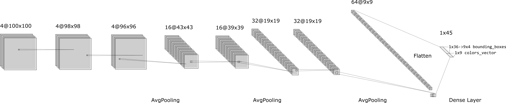
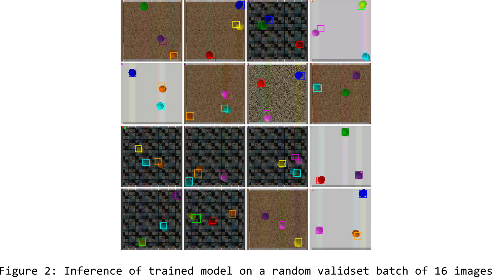

L'objectif de ce projet est d'acquerir des connaissances autour de l'aspect empirique du deep
learning. Ce projet est l'occasion de mieux maitriser le framework pytorch dans un cas d'utilisation
simple mais relativement complet.
Ce TP se divise en deux taches: implémenter un modèle à base de réseaux neuronaux pour la
detection de balles colorées dans des images et un modèle de prédiction de la position future de
balles.
Le dataset utilisé dans ce projet est un sous-ensemble du dataset synthétique crée pour les
experimentations décrites dans le papier suivant : Fabien
Baradel, Natalia Neverova, Julien Mille, Greg Mori, Christian Wolf. COPHY: Counterfactual Learning of Physical
Dynamics. pre-print arXiv:1909.12000, 2019..
Une des particularités de ce dataset que l'on a observés lors de l'exploration des
données est que toutes les images (100x100) ne comprenent que trois balles et chaques balles d'une
même image ont une couleur différente parmis les 9 couleurs possibles.
J'ai également pû observer une certaine redondance d'information de par la représentation
des données utilisée: les bounding boxes des balles indiquent la couleur, de par leur position dans le
tenseur, alors que les informations de couleurs sont déjà présentes dans le vecteur de couleurs. Un
des points important de ce TP est que le dataset est pensé pour éviter certaines difficultées
communes à la detection d'objet: avec un nombre constant de balles à detecter, les modèles
à implémenter sont bien plus simples (pas d'approches récurantes (RCNN) ou similaires aux
modèles de detection tels que SSD ou Yolo). De même, il est peut-être possible que la redondance
des informations est la conséquence d'une démarche visant à rendre l'entrainement plus
simple sur les bounding boxes en donnant une sémantique claire et simple de l'emplacement et
l'ordre des boundings boxes à inferer (ordre/emplacement donné par la couleur). Ainsi, il n'y
a pas besoin de penser une 'loss' ou un post-traitement spécifique qui renderais le
modèle invariant à l'ordre des bounding boxes (autrement, le modèle aurait plus de mal à
converger puisque même si il infère des bounding boxes parfaites, si elles sont données dans le
'mauvais ordre', alors l'erreur sera importante).
Pour une meilleure reproductibilité des résultats, nous avons fixé les seeds aléatoires de
numpy.random, python.random, de torch.manual_seed ainsi que
torch.cuda.manual_seed_all.
Les données fournies pour ce TP sont divisées en deux sous datasets associés aux deux tâches/parties de ce TP :
Le but de cette première tâche est dans un premier temps d'implémenter un modèle la couleur des balles d'un image en entrée. Puis dans un second temps, d'ajouter au modèle entrainé, l'inférence des coordonées des bounding boxes donnant la position des balles dans l'image en entrée.
La seconde partie de ce TP vise à implémenter un modèle pouvant prédire la position future de 3 balles à partir d'une séquence de 19 observations dans le temps de la position des balles dans les images (prédiction de la 20ème observation des balles). Ce modèle ne prend pas nescessairement d'image en entrée, seulement la séquence passée de positions de balles et le vecteur de couleurs d'images suffisent (on suppose que l'image ne contient pas d'informations supplémentaires sur le mouvement des balles).
Entrainer un modèle sur cette seconde tâche amène le modèle à infèrer partiellement et implicitement les propritétés physiques de la balles. En effet le dataset synthétique a été généré en simulant le mouvement de balles avec des propriété physiques variables (masses, frottements, ect...) et ces paramètres ne sont nullement disponnibles au delà de l'observation du comportement de la balle. Ce dataset est pensé pour que le problème posé ne soit pas totalement résolvable ('ill posed problem') puisque les proriétés physiques des balles ne peuvent pas être completement connues à partir de la séquence seule.
On peut aussi se poser la question, concerant le vecteur de couleurs des balles, de si les propriétés
physiques des balles sont elles partielement correllées avec leur couleurs respective. Si on prend pour
à-priori qu'il n'y a pas de causalité alors on peut ignorer totalement les couleurs pour cette
partie du TP.
Nous faisons le choix de prendre le vecteur des couleurs en entrée de notre modèle. A suposer qu'il
n'y a pas d'information pertinantes sur les mouvements de balles dans leur couleurs, il faut
espèrer que le dataset ne présente pas de correlations sans causalité (nous n'avons pas
exploré cet aspect dans l'EDA) et que la régularisation du modèle suffirat à surmonter
les légères corrélation.
Les dépendences du projets sont gèrées avec un environement conda; Il suffit donc d'une
distribution conda (e.g. Anconda ou Miniconda) et de créer l'environement conda pour pouvoir executer le
code. Les fichiers python ../src/train.py (entrainement d'un modèle avec
les meilleurs hyperparamètres trouvés) et ../src/hp.py (recherche
d'hyperparametres executant de nombreux entrainement sur moins d'epochs) sont les deux points
d'entrée principals. Ces deux programmes doivent avoir pour argument --model
detect (tâche 1: detection de balles) ou --model forecast
(tâche 2: prédiction de position de balle future).
Ci dessous les instructions d'installation et des exemples d'execution d'entrainements et de recherches d'hyperparametres sur les tâches 1 et 2 :
############## Installation ############## git clone git@github.com:PaulEmmanuelSotir/BallDetectionAndForecasting.git conda env create -f ./environement.yml conda activate pytorch_5if # Télécharge les datasets (nescessite les packages 'curl' et 'tar' sur une distribution Linux (ou WSL - Linux subsystem on Windows)) bash ./download_dataset.sh ############## Exemples d'utilisation ############## # Entraine le modèle de détection de balles (tache 1) avec les meilleurs hyperparamètres trouvés python -O ./src/train.py --model detect # Execute une recherche d'hyperparamètres pour la detection de balles (hyperopt) python -O ./src/hp.py --model detect | tee ./hp_detect.log # Entraine le modèle de prédiction de position de balles (tache 2) avec les meilleurs hyperparamètres trouvés python -O ./src/train.py --model forecast # Execute une recherche d'hyperparamètres pour la prédiction de position de la balles (hyperopt) python -O ./src/hp.py --model forecast | tee ./hp_forecast.log
Example d'entrainement du modèle de detection de balles :
(pytorch_5if) pes@pes-desktop:~/BallDetectionAndForecasting$ python -O ./src/train.py --model detect > Initializing and training ball detection model (mini_balls dataset)... > __debug__ == False - Using 16 workers in each DataLoader... > MODEL ARCHITECTURE: BallDetector( (_layers): Sequential( (0): Sequential( (0): Conv2d(3, 4, kernel_size=(3, 3), stride=(1, 1)) (1): ReLU() (2): BatchNorm2d(4, eps=1e-05, momentum=0.07359778246238029, affine=True, track_running_stats=True) ) (1): Sequential( (0): Conv2d(4, 4, kernel_size=(3, 3), stride=(1, 1)) (1): ReLU() (2): BatchNorm2d(4, eps=1e-05, momentum=0.07359778246238029, affine=True, track_running_stats=True) ) (2): Sequential( (0): Conv2d(4, 4, kernel_size=(3, 3), stride=(1, 1)) (1): ReLU() (2): BatchNorm2d(4, eps=1e-05, momentum=0.07359778246238029, affine=True, track_running_stats=True) ) (3): AvgPool2d(kernel_size=(2, 2), stride=(2, 2), padding=0) (4): Sequential( (0): Conv2d(4, 16, kernel_size=(5, 5), stride=(1, 1)) (1): ReLU() (2): BatchNorm2d(16, eps=1e-05, momentum=0.07359778246238029, affine=True, track_running_stats=True) ) (5): Sequential( (0): Conv2d(16, 16, kernel_size=(5, 5), stride=(1, 1)) (1): ReLU() (2): BatchNorm2d(16, eps=1e-05, momentum=0.07359778246238029, affine=True, track_running_stats=True) ) (6): AvgPool2d(kernel_size=(2, 2), stride=(2, 2), padding=0) (7): Sequential( (0): Conv2d(16, 32, kernel_size=(5, 5), stride=(1, 1), padding=(2, 2)) (1): ReLU() (2): BatchNorm2d(32, eps=1e-05, momentum=0.07359778246238029, affine=True, track_running_stats=True) ) (8): Sequential( (0): Conv2d(32, 32, kernel_size=(7, 7), stride=(1, 1), padding=(3, 3)) (1): ReLU() (2): BatchNorm2d(32, eps=1e-05, momentum=0.07359778246238029, affine=True, track_running_stats=True) ) (9): AvgPool2d(kernel_size=(2, 2), stride=(2, 2), padding=0) (10): Sequential( (0): Conv2d(32, 64, kernel_size=(5, 5), stride=(1, 1), padding=(2, 2)) (1): ReLU() (2): BatchNorm2d(64, eps=1e-05, momentum=0.07359778246238029, affine=True, track_running_stats=True) ) (11): Flatten() (12): Sequential( (0): Linear(in_features=5184, out_features=45, bias=True) (1): Identity() ) ) ) > MODEL CONVOLUTION FEATURE SIZES: [torch.Size([1, 4, 98, 98]), torch.Size([1, 4, 96, 96]), torch.Size([1, 4, 94, 94]), torch.Size([1, 16, 43, 43]), torch.Size([1, 16, 39, 39]), torch.Size([1, 32, 19, 19]), torch.Size([1, 32, 19, 19]), torch.Size([1, 64, 9, 9])] Epoch 001/400 --------------- > Training on trainset 100%|██████████████████████████████████████| 1181/1181 [Elapsed=00:15, Remaining=00:00, Speed=75.31batch/s, batch_size=16, lr=6.537E-04, trainLoss=0.1971397]^[[B > Done: TRAIN_LOSS = 0.1971397 > Evaluation on validset 0%| | 0/131 [Elapsed=00:00, Remaining=?, Speed=?batch/s, BatchSize=16]> ! Saving visualization images of inference on some validset values... > Evaluation on validset 100%|█████████████████████████████████████████████████████████████████████████| 131/131 [Elapsed=00:00, Remaining=00:00, Speed=192.49batch/s, BatchSize=16] > Done: VALID_LOSS = 0.1930378 > Best valid_loss found so far, saving model... Epoch 002/400 --------------- > Training on trainset 100%|██████████████████████████████████████| 1181/1181 [Elapsed=00:13, Remaining=00:00, Speed=87.46batch/s, batch_size=16, lr=6.537E-04, trainLoss=0.1557234] > Done: TRAIN_LOSS = 0.1540092 > Evaluation on validset 0%| | 0/131 [Elapsed=00:00, Remaining=?, Speed=?batch/s, BatchSize=16]> ! Saving visualization images of inference on some validset values... > Evaluation on validset 100%|█████████████████████████████████████████████████████████████████████████| 131/131 [Elapsed=00:00, Remaining=00:00, Speed=193.57batch/s, BatchSize=16] > Done: VALID_LOSS = 0.1374522 > Best valid_loss found so far, saving model... ... ... ...
Une fois les recherches d'hyperparamètres lancées ou terminées, on peut utiliser les fonction
outils balldetect.torch_utils.extract_from_hp_search_log() et
balldetect.torch_utils.summarize_hp_search() pour explorer les résultats
d'une recherche d'hyperparamètres sur un notebook jupyter, par example (voir le notebook
../notebooks/ball_detection_hp_search_results.ipynb, les logs bruts situé dans le dossier ../hp_search_logs/, l'annexe à la fin de ce rapport pour les
résultats des recherches d'hyperparamètres ou ../src/hp.py pour
l'implémentation de la recherche d'hyperparamètres avec le module
'hyperopt').
Le projet est constitué d'un module Python 'balldetect' contenant :
Les fichiers ../src/train.py et ../src/hp.py sont les points d'entrée pour, respectivement, l'entrainement d'un modèle (detection ou forecasting) avec les meilleurs paramètres trouvés et la recherche d'hyperparamètres (detction ou forecasting) cherchant les meilleurs hyperparamètres 'sampled' dans un espace définit.
Organisation du dossier du projet :
- BallDetectionAndForecasting - src/ # Code source du projet - balldetect/ # Module 'balldetect' - __init__.py - ball_detector.py # Modèle de detection de balles (tâche 1) - datasets.py # Objets datasets (fourni), création des dataloaders et fonction 'retrieve_data' - seq_prediction.py # Modèle de prédiction de position de balles (tâche 2) - torch_utils.py # Fonctions définissant du code commun réutilisable: Couches de convolution ou denses; parralelize; Flatten ; tqdm personnalisé; ... - vis.py # Visualization des images avec boundings boxes (fourni) - train.py # Code utilisant le module 'balldetect' pour entrainer le modèle de detection ou de prédiction de position de balles - hp.py # Code de recherche d'hyperparamètres - notebooks/ - ball_detection_hp_search_results.ipynb # Notebook inspectant le résultat des recherches d'hyperparamètres - test_fastai.ipynb # Notebook 'brouillon' testant une approche préliminaire au TP avec fastai (tache 1.1) - test_fastai-bbox.ipynb # Notebook 'brouillon'testant une approche préliminaire au TP avec fastai (tache 1.2: version avec bounding-boxes) - datasets/ - mini_balls/ - mini_balls_seq/ - hp_search_logs/ # Dossier des logs d'execution des recherches d'hyperparamètres ('../src/hp.py') - docs/ - rapport.md # Ce rapport au format originel (markdown) - rapport.html - ball_detection_hp_search_results.html - figures/ # Dossier d'images/figures contenues dans ce rapport - download_dataset.sh # Script de téléchargement des datasets - environement.yml # Environement conda, définit les dépendances - LICENSE - README.md - .gitignore
test_fastai.ipynb
test_fastai-bbox.ipynb)Dans un premier temps, avant de coder l'approche avec des modèles Pytorch personalisés. Des
premiers tests on été fait avec fastai pour avoir une idée de la difficulté de la
première tâche et ainsi avoir une baseline. L'approche avec fastai, certes très peut
didactique ou optimisée en termes de taille de modèle, permet des résultats assez corrects de
manière très rapide. Il s'agissait de tester des modèles connus (e.g. variantes de ResNet)
préentrainnés sur des images ImageNet ou autre. Un rapide fine-tunning sur le dataset de
détéction de balles permet d'obtenir un detection raisonable en 3-4 lignes de code.
Une des fonctionalités également interessantes de fastai est l'implémentation d'un
méthode pour déterminer un meilleur learning rate sans avoir à executer une recherche
d'hyperprametres classique (type random-search): le learning rate est déterminé le temps d'une
seule époque en changeant le learning rate à chaque batch d'entrainement (voir callbacks.lr_finder de fastai).
Cette approche préliminaire a permit de mieux connaitre les avantages et inconvénients d'une
utilisation très basique de fastai (en effet, fastai n'empêche pas un controle complet sur le
modèle entrainé et la procédure d'entrainement). Les résultats obtenus permettent dans la
suite de pouvoir mieux interpreter les valeurs des métriques sur ce dataset (donne une baseline raisonnable).
# Device donné en argument de la fonction '.to(DEVICE)' des torch.Tensor DEVICE = torch.device('cuda') if torch.cuda.is_available() else torch.device('cpu')
num_workers des Dataloader-s) :# Nombre de 'thread' utilisés pour chaque dataloader _DEFAULT_WORKERS = 0 if __debug__ else min(os.cpu_count() - 1, max(1, os.cpu_count() // 4) * max(1, torch.cuda.device_count()))
cudnn.benchmark et cudnn.fastest. Cependant, activer
le benchmarking de CuDNN dans Pytorch peut impacter la reproducibilité des résultats étant
donné que ce n'est pas un processus déterministe (même avec
torch.backends.cudnn.deterministic = True).# Torch CuDNN configuration torch.backends.cudnn.deterministic = True cudnn.benchmark = torch.cuda.is_available() # Enable builtin CuDNN auto-tuner, TODO: benchmarking isn't deterministic, disable this if this is an issue (and disable parallelization to which isn't deterministic neither) cudnn.fastest = torch.cuda.is_available() # Disable this if memory issues
Les performances ont aussi été un facteur important dans les choix d'hyperparamètres et d'architecture des modèles (espace de recherche des hyperparametres avec hyperopt). Par exemple, l'architecture du detecteur contient des couches de convolution avec du average pooling (remplacant le 'stride' de 2 dans les dernières variantes du modèle) pour réduire la quantitée de paramètres et de features à traiter. Les deux modèles ont un nombre total de couches relativement faibles. Pareillement, le nombre de filtres de convolution, la taille des filtres (3x3 ou, plus haut dans la convolution, 5x5) et la largeur des couches fully-connected ont été choisis, en autre, pour être assez faibles étant donné la simplicité aparante de la tâche de détection et pour permettre un entrainement plus rapide.
Les entrainements des modèles sont également accélérés en parallelisant les
'training steps' sur plusieurs GPUs automatiquement avec model =
nn.DataParallel(model) (voir la fonction paralellize(model: nn.Module) ->
nn.Module dans ../src/balldetect/torch_utils.py). Les
modèles ont été entrainé sur une machine personnelle dotée de deux NVidia 1080 ti; La
paralèllisation des données avec cette fonction automatique de Pytorch vas donc executer deux
entrainements en parallèle et synchroniser les gradients à chaque étapes de manière
synchrone en calculant la moyenne des deux 'training steps' avant de passer à
l'entrainement sur les prochains batchs.
De par le besoin de synchronisation des gradients, le modèle et/ou les données/batch_size doivent
être assez volumineux pour que cette parallèlisation offre une accélération de
l'entrainement par rapport à l'utilisation d'un seul GPU.
Par exemple, on observe pour le modèle de detection de balles qu'il faut une
batch_size souvent supérieure à 64 pour que les deux 1080 ti soit
utilisées au delà de 50% (nvidia-smi). Cependant, trop augmenter la batch_size peut poser des
problèmes, notamment à cause de la taille limitée du dataset et, pour des modèles plus
importants, pourrais demander une quantitée de mémoire vidéo trop grande.
Le modèle que nous avons construit pour la détection de balles devait dans un premier temps ne
détecter que les couleurs de balles et non leur positions dans l'image (bounding boxes).
Dans un second temps, nous avons modifié le modèle pour inférer également les bounding boxes.
Les données issues du dataset ayant une redondance, en autre, au niveau des couleurs de balles (information
de couleur présente à la fois dans l'ordre des bounding boxes et dans le vecteur de couleurs), nous
avons implémenté deux alternative :
BallsCFDetection.__getitem__ et retrieve_data dans
../src/balldetect/datasets.py) : le modèle fait donne donc en
sortie une régression de 3 bounding boxes (3x4 coordonnées) et une multi-label
classsification pour donner en sortie le vecteur de couleurs (9 valeurs binaires, dont 3 sont à 1 et
les autres à 0)J'ai également testé rappidement une autre alternative où seul les bounding boxes sont inférées et la couleur est déduite de la position des trois vecteurs de coordonnées maximaux; Mais étant donné que la tâche demandée dans le sujet implique que le modèle infère à la fois le vecteur de couleurs et les boudning boxes (d'après ma compréhension du sujet), je n'ai pas exploré cette variante d'avantage.
Un résultat interessant que j'ai pû observer est qu'inférer seulement 3 bounding boxes
au lieu de 9 dont 6 nulles n'améliore pas forcément les performances du modèle, voir le
contraire. Cette observation peut avoir plusieur explication :
Comme expliqué à l'introduction, la structure de données pour les bounding boxes dans une
matrice de 9 vecteurs de coordonées est plus simple/claire au niveau de l'ordre/position des vecteurs de
coordonnées, alors que l'inférence de 3 bounding boxes, même avec l'ordre initial
conservé, a moins de sens.
Il est également possible que ce résultat soit dû à d'autres problèmes dans le
modèle qui ont été résoluts par la suite, sans avoir réévalué l'interet de
cette simplification des bounding boxes.
La loss utilisée pour entrainer le modèle est l'addiction de deux termes/métriques :
bce_loss_scale=0.1)Le modèle est composé d'un 'convolution backbone' suivit d'une ou
plusieurs couches denses (fully connected layer). L'architecture du modèle contient
également des couches nn.AvgPooling2d dans le backbone de
convolutions.
Nous avons implémenté l'architecture de manière relativement générique de
manière à pouvoir en définir facilement des variantes dans les hyperparamètres.
Une couche de convolution ou dense (nn.Conv2d ou
nn.Linear) peut-être composée d'une fonction d'activation
(hyperparametre architecture.act_fn), de dropout (si
architecture.dropout_prob != 1.), de batch normalization (si
architecture.batch_norm définit les paramètres
'eps' et 'momentum'). Voir ../src/balldetect/torch_utils.py pour plus de détails sur
l'implémentation des couches.
Pour ce modèle, nous avons principalement exploré les fonctions d'activation
nn.ReLU et nn.LeakyReLU.
Les tailles de filtres de convolutions considèrées sont principalement de 3x3,
5x5 et parfois 7x7 et 1x1 (avec des padding correspondant).
Nous avons également exploré l'utilisation de stride à 2 ou 4 avant de remplacer cette
pratique par de l'average pooling.
Le Modèle a été entrainé sur le dataset mini_balls composé
de 20000 images. Le dataset est découpé aléatoirement en un 'trainset' (90% du dataset)
et un 'validset' (10% du dataset). Malheureusement, nous n'avons pas eu le temps d'implementer
une cross-validation qui aurais été utile étant donné la petite taille du dataset. En effet,
dans cette configuration, le validset est un peu trop petit et il risque d'y avoir des instabilités sur
les valeurs des métriques d'évaluation qui pourrait, en autre, fausser la recherche
d'hyperparamètres. De plus, nous n'avons pas créé de 'testset' pour une
évaluation plus ponctuelle par crainte de perdre d'avantage de données d'entrainement avec un
dataset de cette taille. Cepandant, il aurait peut-être été pertinant d'en créer un pour
mesurer la présence d'overfitting sur le validset dû à la recherche d'hyperparametres.
La recherche d'hyperparamètre à permit de trouver de bien meilleurs paramètres
d'entrainement et choisir la bonne variante d'architecture parmit celles définies dans
l'espace d'hyperparamètres. Nous avons pû définir plusieurs espaces
d'hyperparamètres relativement restreints à la lumière des résultats obtenus avec des
paramètres définit subjectivement.
Ci-dessous, les deux derniers espace de recherche d'hyperparamètres utilisés avec hyperopt pour la
détection de balles dans ../src/hp.py (algorithme
tpe.suggest avec 2x100 entrainements de 90 epochs et un early_stopping de 12
epochs):
L'un des premiers espace de recherche d'hyperparamètres utilisé :
> NOTE: L'architecture est définie ici (par 'conv2d_params' et
'fc_params') de manière différente du code actuel, de par un refactoring
rendant plus générique la définition de l'architecture avec les hyperparmètres
(legacy hp search space) :
hp_space = { 'optimizer_params': {'lr': hp.uniform('lr', 5e-6, 1e-4), 'betas': (0.9, 0.999), 'eps': 1e-8, 'weight_decay': hp.loguniform('weight_decay', math.log(1e-7), math.log(1e-3)), 'amsgrad': False}, 'scheduler_params': {'step_size': 40, 'gamma': 0.2}, # LR Steps #'scheduler_params': {'max_lr': 1e-2, 'pct_start': 0.3, 'anneal_strategy': 'cos'}, # One cycle policy 'batch_size': hp.choice('batch_size', [32, 64, 128]), 'architecture': { 'act_fn': nn.LeakyReLU, 'dropout_prob': hp.choice('dropout_prob', [1., hp.uniform('nonzero_dropout_prob', 0.45, 0.8)]), # 'batch_norm': {'eps': 1e-05, 'momentum': 0.1, 'affine': True}, # Convolutional backbone block hyperparameters 'conv2d_params': hp.choice('conv2d_params', [ [{'out_channels': 4, 'kernel_size': (3, 3), 'padding': 1}, {'out_channels': 4, 'kernel_size': (3, 3), 'padding': 1}, {'out_channels': 4, 'kernel_size': (3, 3), 'padding': 1, 'stride': 2}, {'out_channels': 8, 'kernel_size': (5, 5), 'padding': 2}, {'out_channels': 8, 'kernel_size': (7, 7), 'padding': 3}], [{'out_channels': 2, 'kernel_size': (3, 3), 'padding': 1}, {'out_channels': 4, 'kernel_size': (3, 3), 'padding': 1}, {'out_channels': 4, 'kernel_size': (3, 3), 'padding': 1, 'stride': 2}, {'out_channels': 8, 'kernel_size': (5, 5), 'padding': 2}, {'out_channels': 8, 'kernel_size': (5, 5), 'padding': 2, 'stride': 2}, {'out_channels': 16, 'kernel_size': (7, 7), 'padding': 3}], [{'out_channels': 4, 'kernel_size': (3, 3), 'padding': 1}, {'out_channels': 4, 'kernel_size': (3, 3), 'padding': 1}, {'out_channels': 8, 'kernel_size': (3, 3), 'padding': 1}, {'out_channels': 8, 'kernel_size': (3, 3), 'padding': 1, 'stride': 2}, {'out_channels': 16, 'kernel_size': (5, 5), 'padding': 2}], [{'out_channels': 4, 'kernel_size': (3, 3), 'padding': 1}, {'out_channels': 4, 'kernel_size': (3, 3), 'padding': 1}, {'out_channels': 4, 'kernel_size': (3, 3), 'padding': 1}, {'out_channels': 4, 'kernel_size': (3, 3), 'padding': 1, 'stride': 4}, {'out_channels': 8, 'kernel_size': (3, 3), 'padding': 1}, {'out_channels': 8, 'kernel_size': (3, 3), 'padding': 1}] ]), # Fully connected head block hyperparameters (a final FC inference layer with no dropout nor batchnorm will be added when ball detector model is instantiated) 'fc_params': hp.choice('fc_params', [[{'out_features': 64}], [{'out_features': 64}, {'out_features': 128}], []])} }
Second/dernier espace de recherche d'hyperparamètres (architecture des convolutions fixée):
# Ball detector Conv2d backbone layers (nouvelle façon de définir l'architecture) conv_backbone = ( ('conv2d', {'out_channels': 4, 'kernel_size': (3, 3), 'padding': 0}), ('conv2d', {'out_channels': 4, 'kernel_size': (3, 3), 'padding': 0}), ('conv2d', {'out_channels': 4, 'kernel_size': (3, 3), 'padding': 0}), ('avg_pooling', {'kernel_size': (2, 2), 'stride': (2, 2)}), ('conv2d', {'out_channels': 16, 'kernel_size': (5, 5), 'padding': 0}), ('conv2d', {'out_channels': 16, 'kernel_size': (5, 5), 'padding': 0}), ('avg_pooling', {'kernel_size': (2, 2), 'stride': (2, 2)}), ('conv2d', {'out_channels': 32, 'kernel_size': (5, 5), 'padding': 2}), ('conv2d', {'out_channels': 32, 'kernel_size': (7, 7), 'padding': 3}), ('avg_pooling', {'kernel_size': (2, 2), 'stride': (2, 2)}), ('conv2d', {'out_channels': 64, 'kernel_size': (5, 5), 'padding': 2}), ('flatten', {})) # Define hyperparameter search space (second hp search space iteration) for ball detector (task 1) detect_hp_space = { 'optimizer_params': {'lr': hp.uniform('lr', 1e-6, 1e-3), 'betas': (0.9, 0.999), 'eps': 1e-8, 'weight_decay': hp.loguniform('weight_decay', math.log(1e-7), math.log(3e-3)), 'amsgrad': False}, 'scheduler_params': {'step_size': 40, 'gamma': .3}, # 'scheduler_params': {'max_lr': 1e-2, 'pct_start': 0.3, 'anneal_strategy': 'cos'}, 'batch_size': hp.choice('batch_size', [16, 32, 64]), 'bce_loss_scale': 0.1, 'early_stopping': 12, 'epochs': 90, 'architecture': { 'act_fn': nn.ReLU, 'batch_norm': {'eps': 1e-05, 'momentum': hp.uniform('momentum', 0.05, 0.15), 'affine': True}, 'dropout_prob': hp.choice('dropout_prob', [0., hp.uniform('nonzero_dropout_prob', 0.1, 0.45)]), 'layers_param': hp.choice('layers_param', [(*conv_backbone, ('fully_connected', {'out_features': 64}), ('fully_connected', {})), (*conv_backbone, ('fully_connected', {'out_features': 64}), ('fully_connected', {'out_features': 128}), ('fully_connected', {})), (*conv_backbone, ('fully_connected', {'out_features': 128}), ('fully_connected', {'out_features': 128}), ('fully_connected', {})), (*conv_backbone, ('fully_connected', {}))]) } }
La dernière recherche d'hyperparamètres à données les paramètres
"optimaux" suivants (best_valid_loss=0.0031991 après
82 epcohs) :
{ DETECTOR_HP = { 'batch_size': 16, 'bce_loss_scale': 0.1, 'early_stopping': 30, 'epochs': 400, 'optimizer_params': {'amsgrad': False, 'betas': (0.9, 0.999), 'eps': 1e-08, 'lr': 6.537177808319479e-4, 'weight_decay': 6.841231983628692e-06}, 'scheduler_params': {'gamma': 0.3, 'step_size': 40}, 'architecture': { 'act_fn': nn.ReLU, 'batch_norm': {'affine': True, 'eps': 1e-05, 'momentum': 0.07359778246238029}, 'dropout_prob': 0.0, 'layers_param': (('conv2d', {'kernel_size': (3, 3), 'out_channels': 4, 'padding': 0}), ('conv2d', {'kernel_size': (3, 3), 'out_channels': 4, 'padding': 0}), ('conv2d', {'kernel_size': (3, 3), 'out_channels': 4, 'padding': 0}), ('avg_pooling', {'kernel_size': (2, 2), 'stride': (2, 2)}), ('conv2d', {'kernel_size': (5, 5), 'out_channels': 16, 'padding': 0}), ('conv2d', {'kernel_size': (5, 5), 'out_channels': 16, 'padding': 0}), ('avg_pooling', {'kernel_size': (2, 2), 'stride': (2, 2)}), ('conv2d', {'kernel_size': (5, 5), 'out_channels': 32, 'padding': 2}), ('conv2d', {'kernel_size': (7, 7), 'out_channels': 32, 'padding': 3}), ('avg_pooling', {'kernel_size': (2, 2), 'stride': (2, 2)}), ('conv2d', {'kernel_size': (5, 5), 'out_channels': 64, 'padding': 2}), ('flatten', {}), ('fully_connected', {})) } }
> Voir les résultats des recherches d'hyperparamètres en annexe pour plus de détails sur leurs résultats
L'architecture de ce modèle obtenu avec la dernière recherche d'hyperparamètres est la suivante :

Nous avons ensuite entrainé le modèle obtenu plus longement et changé le scheduling du learning
rate pour permettre une meilleure convergance sur un plus grand nombre d'épochs en évitant
l'overfitting: avec ces hyperpramètres un learning rate multiplié par gamma=0.3 toutes
les 40 epochs d'entrainement, on obtient:
best_train_loss=0.0005548 et best_valid_loss=0.0004782
au bout de la 339ème epoch.
Ci dessous quelques résultats obtenus avec ce modèle sur des images du validset:

On peut constater sur les exemples ci-dessus que le modèle de détection de balle et de classification de ler couleur fonctionne, malgré quelques petites imprécisions sur la position exacte de la balle (underfitting légé sur les coordonnées).
../src/balldetect/seq_prediction.py et les hyperparamètres associés dans
../src/train.py)Le modèle de prédiction de position de balles est un simple réseaux de neurones dense (fully connected layers) puisque qu'il n'y a pas d'images en entrée du modèle.
Pour simplifier l'entrainement du modèle, nous avons transformé les données pour enlever la
redondance d'information sur la couleur des balles. En effet, puisque la couleur des balles ne changent pas
dans la séquence, nous entrainons le modèle pour ne prédire que trois bounding boxes (la position
des trois balles données en entrée).
Nous enlevons donc les vecteurs nuls des boundings boxes en entrée (19 x 3 x 4 coordonnées) et des
bounding box cibles (3 x 4 coordonnées). Nous donnons également le vecteur de couleurs (de taille 9) au
cas où la couleur des balles donerais de l'information sur les propriétés physiques des
balles. Cette simplification des données permet une convergence bien plus rappide et meilleure.
Le modèle est un réseaux composé uniquement de couches denses (fully connected). Les couches sont
définies de manière similaire aux couches denses du modèle de détection (tâche 1) à
la différence près de la fonction d'activation utilisée :
nn.tanh et, biensûr, à leur largeur près.
La procédure d'entrainement du modèle est relativement similaire à celle du modèle de
detection de la tache 1, aux hyperparamètres près. Le modèle est entrainé sur le dataset
../dataset/mini_balls_seq avec une séparation aléatoire entre validset
(10% du dataset) et du trainset (90% du dataset), sans testset pour éviter de perdre trop de données,
étant donné la petite taille du dataset. Nous n'avons malheureusement pas pû travailler autant
que voulut sur l'interprètation de la qualité des prédictions faites sur les positions des
balles au delà de la métrique utilisée, la MSE calculée sur les trois bounding boxes de sortie
normalisées par le vecteur balldetect.datasets.BBOX_SCALE.
Ci-dessous, l'espace de recherche d'hyperparamètres utilisée pour trouver les paramètres de ce modèle:
{ 'optimizer_params': {'lr': hp.uniform('lr', 5e-6, 1e-4), 'betas': (0.9, 0.999), 'eps': 1e-8, 'weight_decay': hp.loguniform('weight_decay', math.log(1e-7), math.log(1e-2)), 'amsgrad': False}, 'scheduler_params': {'step_size': EPOCHS, 'gamma': 1.}, # 'scheduler_params': {'max_lr': 1e-2, 'pct_start': 0.3, 'anneal_strategy': 'cos'}, 'batch_size': hp.choice('batch_size', [32, 64, 128]), 'architecture': { 'act_fn': hp.choice('batch_size', [nn.LeakyReLU, nn.ReLU, nn.Tanh]), 'dropout_prob': hp.choice('dropout_prob', [1., hp.uniform('nonzero_dropout_prob', 0.45, 0.8)]), # Fully connected network hyperparameters (a final FC inference layer with no dropout nor batchnorm will be added when ball position predictor model is instantiated) 'fc_params': hp.choice('fc_params', [[{'out_features': 512}, {'out_features': 256}] + [{'out_features': 128}] * 2, [{'out_features': 128}] + [{'out_features': 256}] * 2 + [{'out_features': 512}], [{'out_features': 128}] + [{'out_features': 256}] * 3, [{'out_features': 128}] * 2 + [{'out_features': 256}] * 3, [{'out_features': 128}] * 2 + [{'out_features': 256}] * 4, [{'out_features': 128}] * 3 + [{'out_features': 256}] * 4])} }
Le meilleur modèle trouvé à pour hypererparamètres le dictionnaire suivant
(best_valid_mse=0.0005018, best_train_mse=0.0005203, at 78th epoch over 90 epochs) :
SEQ_PRED_HP = { 'batch_size': 16, 'early_stopping': 30, 'epochs': 400, 'optimizer_params': {'amsgrad': False, 'betas': (0.9, 0.999), 'eps': 1e-08, 'lr': 9.891933484569264e-05, 'weight_decay': 2.0217734556558288e-4}, 'scheduler_params': {'gamma': 0.3, 'step_size': 30}, 'architecture': { 'act_fn': nn.Tanh, 'dropout_prob': 0.44996724122672166, 'fc_params': ({'out_features': 512}, {'out_features': 256}, {'out_features': 128}, {'out_features': 128}) } }
Une fois ce modèle entrainé sur plus d'epochs et un learning rate scheduler adapté, avec ../src/train.py, nous obtenons les résultats suivants :
best_valid_mse=0.0003570 et best_train_mse=0.0002038
au bout de la 270ème epcoh d'entrainement (early stopping à la 300ème epoch).
Malheureusement, malgré les dispositions sur la reproductibilité, si l'on relance
l'entrainement, nous obtenons les résultats suivants (peut-être lié à l'optimisation
de CuDNN non-deterministe) :
best_train_mse=0.0005548 et best_valid_mse=0.0004782
à la 173ème epoch (early stopping à la 203ème epoch).
Je n'ai pas eu le temps de mieux interprêter les valeurs de loss pour ce modèle et pour visualiser les séquences de bounding boxes inférées.
Il aurait aussi été interessant de voir le comportement du modèle si appliqué de manière "récurrente' en donnant pour séquence dn entrée les 18 dernières positions et la position inférée précédemment pour en déduire la position de la balle à l'instant t+2 et ainsi de suite... (plus ou moins simmilaire à l'application d'un RNN avec une 'fenêtre contextuelle' de 20étapes, mais sans features représantant l''états interne' du RNN)
Pour conclure, développer et tester des modèles Pytorch, certes simples, m'as permit d'approfondir mes connaissances en deep learning, notamment d'un point de vue pratique/technique.
Il est regretable que l'interpretation des métriques et la visualisation des résultats de la tâche 2 souffre d'un manque de temps (ou plutôt, est la conséquence des priotés données aux différents aspects du projet). Cepandant, nous avons pû développer des modèles Pytorch et des procédures d'entrainement assez fonctionels, complets, générique et réutilisables. En effet, ce projet a également été l'occasion poser une base de code relativement solide pour de futurs projets en Pytorch.
Copyright (c) 2019 Paul-Emmanuel SOTIR
This project and document is under open-source MIT license, browse to: https://github.com/PaulEmmanuelSotir/BallDetectionAndForecasting/blob/master/LICENSE
for full MIT license text.
(notebook écrit en anglais)